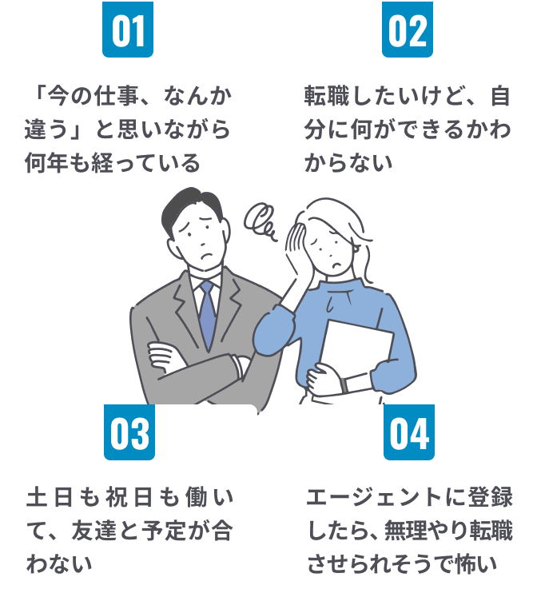
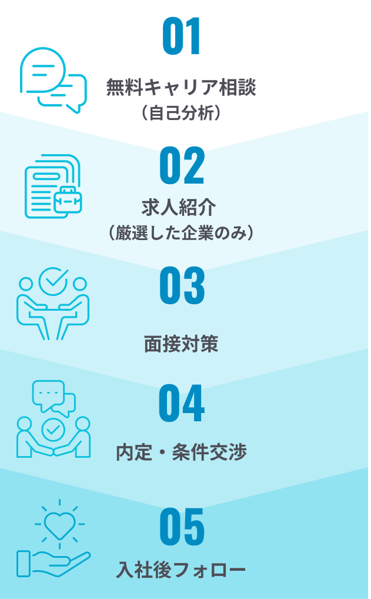

CASES
こんな「モヤモヤ」「不安」
抱えていませんか？

Re Start Careerに
任せてください!
POINT
なぜ、
が選ばれるのか?
-
POINT 01
独自の
「ライフワークシート」で
価値観を可視化求人を紹介する前に、あなたのことを深く知るところから始めます。
独自の「ライフワークシート」を使って、大事にしたい価値観と今の仕事で合っていない価値観を可視化していきます。
そうすることで「自分には何もない」と思っていた人が、自分の強みを言葉にできるようになります。 -
POINT 02
転職を急かさない、
伴走型サポート「とりあえず応募」は絶対に言いません。
あなたが納得できる仕事を見つけることが目的なので、転職のペースはあなたが決めていいんです。
面談から内定まで、二人三脚で伴走します。 -
POINT 03
人事のプロによる
徹底サポート企業側の視点を持つプロが、あなたの経験やスキルを企業に正しく伝えられます。
自分では気づいていない強みが、企業が求める力として伝わります。
AGENT
私が、
本気であなたと向き合います。
佐藤 かおりKaori Sato
面接の前日まで
二人三脚で伴走します。
約15年間、上場企業の人事として人材開発部門に従事。
500名規模の子会社で人事部長も経験。
2022年にキャリアコンサルタントの資格を取得し、キャリア支援やミドル層の転職支援に携わる。
600名以上の方のキャリア面談を実施。
VOICE
で
転職を成功させた方の声
-
点と点が線で
つながったような感覚です24歳
自分の特性をこれほど多角的に分析していただけるとは思っていませんでした。
-
面接に同行してくれたので、
安心してのぞめました。24歳
面談前の打ち合わせや面接同行など、手厚いフォローのおかげで安心して本番に臨めました。
FLOW
ご相談から内定までの流れ

Q&A
よくある質問
はい、もちろんご相談いただけます。
転職を前提としなくても、「今の仕事を続けるべきか迷っている」「将来のキャリアを整理したい」といった段階でも問題ありません。情報収集やキャリアの棚卸しだけのご相談も歓迎しております。無理に転職を勧めることはありませんので、安心してご利用ください。
はい、大丈夫です。これまでのご経験は、業界や職種に関わらず必ず強みがあります。
ご本人では気づきにくいスキルや価値観を一緒に整理し、活かせる可能性を探していきます。「自信がない」という状態からのご相談も多くありますので、まずはお気軽にお話しください。
はい、ご都合に合わせて柔軟に対応いたします。オンライン面談や電話でのご相談も可能です。
在職中の方でも無理なく進められるようサポートいたします。
はい、可能です。未経験分野へのチャレンジも含め、適性や希望に合わせて選択肢をご提案いたします。まずは可能性を一緒に整理していきましょう。
キャリア面談・求人紹介まで、費用は一切かかりませんので、安心してご利用ください。